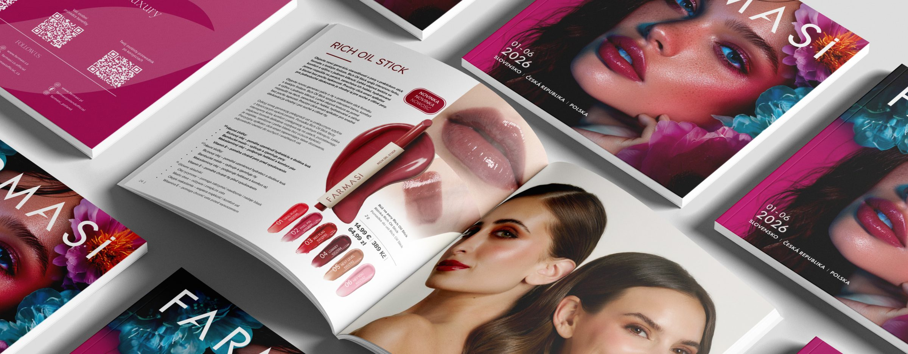
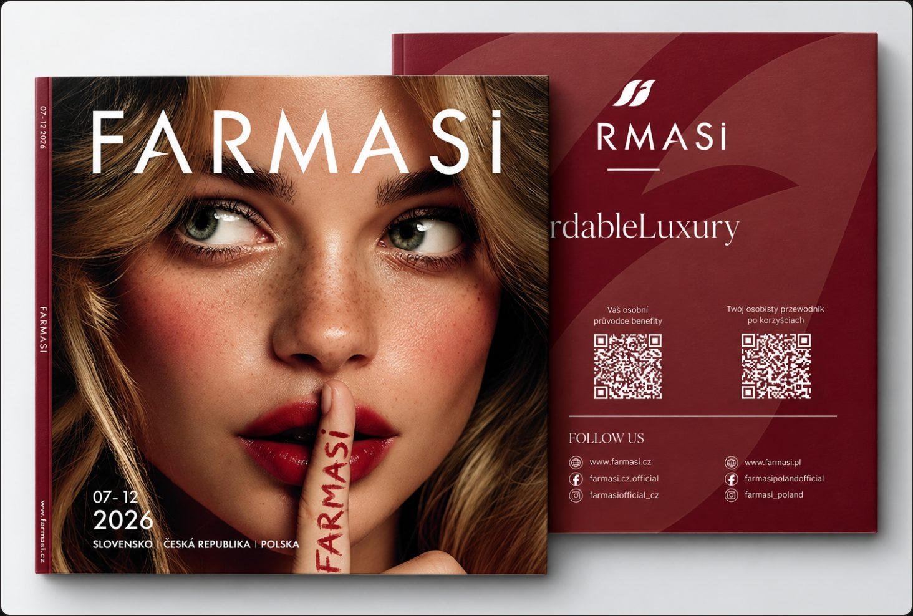
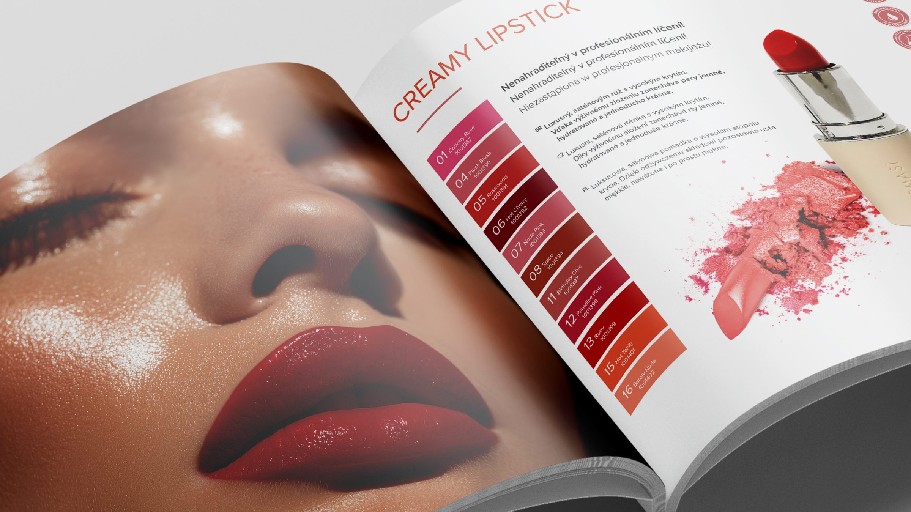
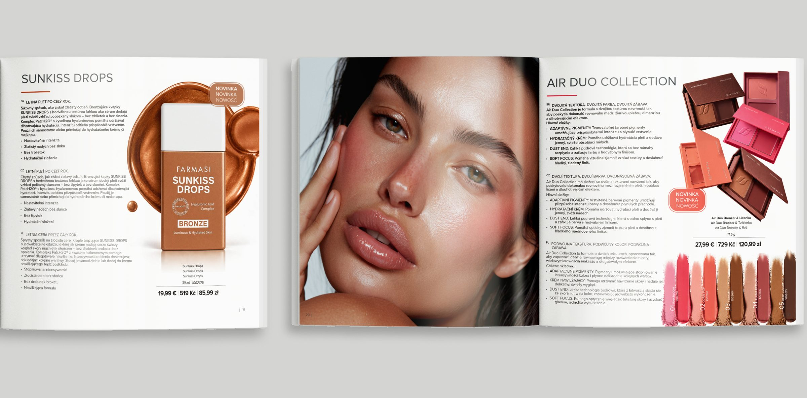
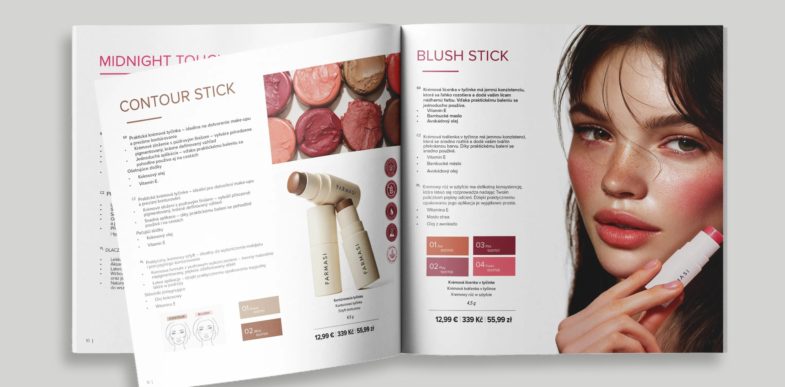
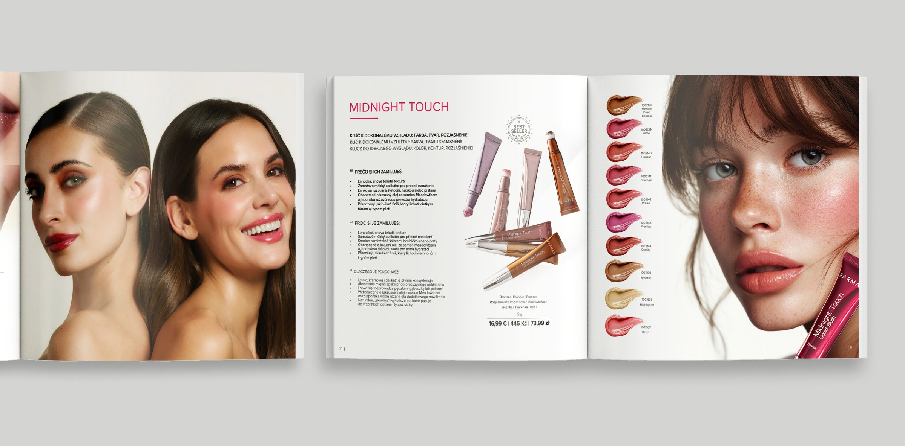
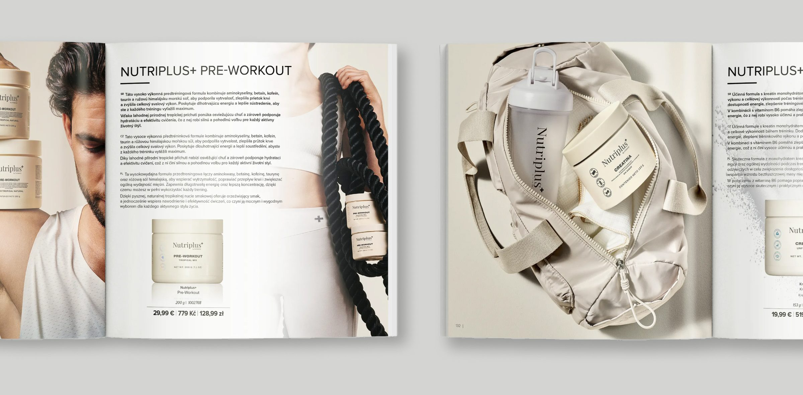
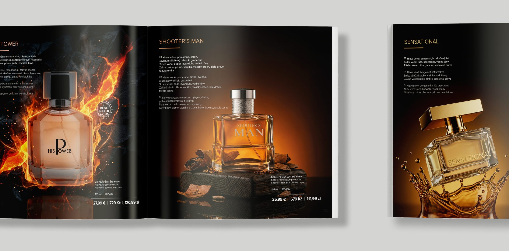

Farmasi — Catalog
A biannual product catalog designed for Farmasi’s Central European markets — Poland, the Czech Republic, and Slovakia.
I developed the complete visual direction and editorial design, from the cover concept to the internal layouts and product presentation.

Context
Farmasi releases a new catalog every six months for its Central European markets, bringing together products across beauty, skincare, fragrance and personal care.
The challenge was to bring a large amount of product information and diverse visual content into one cohesive publication, while creating and adapting imagery to give each category its own character within a consistent visual system.
My Role
I was responsible for the catalog’s complete visual execution, from the cover to the final page.
I developed the visual direction, designed the editorial layouts and product compositions, and created or retouched the majority of the imagery using Photoshop and AI-assisted workflows. I worked with provided copy and product information, translating the content into a cohesive visual system across the entire publication.
Design Approach
The visual system was designed to balance consistency with variety. Each product category needed its own mood and visual character, while still feeling part of the same Farmasi catalog.
I used typography, scale, composition and imagery to build clear hierarchy across the publication. AI-assisted image creation and Photoshop retouching allowed me to develop visuals specifically for different sections and create more distinctive editorial moments throughout the catalog.
Flexible layouts built around a consistent visual language.
Clear distinction between hero products, supporting content and product information.
Custom-created and retouched visuals tailored to individual sections.
Different categories, connected through typography, spacing and composition.
Cover Design

The cover sets the visual tone for the entire edition, combining bold beauty imagery with a clean typographic composition.
I created and refined the key visual to give the catalog a distinctive identity while keeping it clearly recognizable as part of the Farmasi brand.

Selected Spreads
Each section was designed around the character of its product category, allowing the visual language to shift from bold and expressive to clean and minimal where needed.
I combined custom and retouched imagery with flexible editorial layouts to create visual variety throughout the catalog, while consistent typography, spacing and product hierarchy keep the experience cohesive and easy to navigate.





Summary
The final catalog brings together multiple product categories, visual styles and a large amount of information within one cohesive editorial experience.
From visual direction and image creation to cover design and final layouts, I shaped the publication as a complete system — creating an engaging and consistent catalog for Farmasi’s Central European markets.